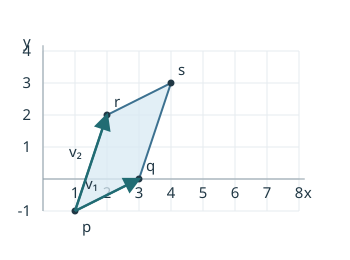
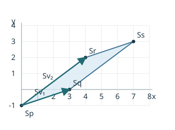

第三部分：行列式
Part 3: Determinants
使用说明与总索引 / Guide and Index。先读完整题面并独立作答，再分别展开提示与答案。这里集中完整计算训练；主题中的概念主例与短检验仍可就地阅读。
计算与结构判断 Computation and Structural Decisions
L3-01：换行、倍乘与完整记账 Tracking Row Operations
典型例题 / Worked Example. 设 。先尝试安排一次换行和一次非零倍乘把它化为三角阵，记录因子，再看示范。
提示 / Hint
第一列顶部为零，先交换前两行；第二行的主元是2，可乘1/2把它化为1，但要记账。
完整记账示范 / Worked Solution
依次操作：
再做 ，最后 ：
，但 ，所以 。也可按原第一行展开：。不要把最终三角阵的对角乘积直接当原矩阵的行列式。
另一条路线 / Another Route. 从 出发先做 ，再交换前两行，不做倍乘，继续化到三角阵并复核 。
提示 / Hint
交换后第二行的主元是2，用它消去第三行第二个数1。
完整解答 / Full Solution
先得到 ，交换后是 ，还需 才成三角阵，其对角为 ，乘积7。一次交换给 。第二步之后尚未成三角阵，不能漏掉最后消元。
所需知识 / Prerequisites：行操作与三角矩阵 / Row Operations and Triangular Matrices。
来源 / Source：课程既有训练。
L3-02：展开还是消元 Expansion or Elimination
自编题 / Course Exercise. 求 的行列式。比较沿第三列展开和先作少量行替换的方法，说明零元素怎样减少计算。
提示 / Hint
第三列只有一个非零元；若消元，先用第一行消去第一列下方两个非零元。
完整计算与交叉核验 / Calculation and Cross-Check
沿第三列展开，，所以 另一条路线：依次作 、、，得到 行替换不改行列式，对角乘积也是 。前一方法只需算一个三阶子式，后一方法只需三次替换；零项不必展开其子式。
所需知识 / Prerequisites：计算方法与条件 / Methods and Conditions。
来源 / Source：课程既有训练。
L3-07：从列的线性组合求行列式 Determinants of Column Combinations
设 是实三阶矩阵，，其中 是第 列。矩阵 的三列依次是
热身 / Warm-Up. 求 。
主问 / Main Question. 不知道 的具体元素，能否确定 ？为什么？
改变已知条件 / Vary the Given Determinant. 再改设 ，三列组合不变。哪些计算不用重做？分别求 与 ，它们何时相等？
① 选做追问 / Optional Follow-Up. 若只将 的第三列换成 ，其中 ，为什么替列后的行列式只留下 ？
② 几何追问 / Geometric Follow-Up. 分别以 和 的三列为棱，所得平行六面体的普通体积各是 的三列所围成体积的多少倍？用你的计算解释。
提示 / Hint
请把 的第二列写成 乘以一个向量。
主解答 / Main Solution
热身中三行都乘2，所以 。
由矩阵乘向量的列组合意义， 的第二列是 。把三个新列的系数向量依次排成列，得到 的每一列记录对应新列的组合系数；逐列相乘正好得到题面中的三列，因此是 。
用列倍加计算 。先把第2列、第3列分别减去第1列，得到 再把 的第3列减去第2列的2倍，得到 每一步列倍加都不改变行列式，最后是下三角矩阵，故 乘积公式于是给 ，无需知道 的具体元素。
改设 后，组合系数矩阵 、关系 和 的计算均不用重做；热身的三阶缩放因子也仍为8。因此 与 表示不同的构造，行列式应分别计算。在 的前提下， 可除以 ，所以二者仅在 时相等。
① 选做反馈：只换第三列 / Optional Feedback: Replacing Only Column 3
固定前两列，用单列线性展开： 的项各有两列相同，行列式为零； 的项恰好恢复 。这个恒等式本身不要求 可逆；只有再除以 求 时才需要非零条件。
② 几何反馈：普通体积 / Geometric Feedback: Ordinary Volume
以矩阵三列为棱的平行六面体，普通体积是行列式的绝对值。原体积 ，两组新棱给出的体积分别为 与 ，因此是原来的8倍和2倍。
改设 ，原体积为 ，新体积分别为 与 ，倍数不变。 把每条棱都乘2； 则重新组合三条棱，其体积比由组合系数矩阵的 给出。普通体积须取绝对值，不能把可能为负的有向体积直接当图形大小。
所需知识 / Prerequisites：矩阵乘法的列组合 / Columns of a Matrix Product · 整矩阵数乘与三角矩阵 / Scalar Multiples and Triangular Matrices · 列规则与乘积公式 / Column Operations and the Product Rule · 单列线性 / Linearity in One Column · 列生成的体积 / Volume Generated by Columns。
来源 / Source：根据教师提供的习题改编。
L3-03：参数矩阵与两个目标 A Parameter and Two Targets
令 ，取 。先作 ，再回答： 与 时各有几个主元？秩、列无关、零空间、列空间、单射、满射、可逆与行列式怎样对应？分别分析目标 、。在可逆时用克拉默法则写解，并检验 的旧矩阵 ；在奇异时解释为何不能把分式当成解。
提示 / Hint
消元后第二行系数含 ，先分类再除法。奇异时把目标与列向量 比较；左零向量可提供另一个相容性检验。
从主元到行列式 / From Pivots to Determinants
消元得 ，行替换不改行列式，所以 。
当 ，有两个主元，秩为2。两列无关并构成 的基；零空间为 ，列空间为 ，因此变换单射且满射，矩阵可逆，两个目标各有唯一解。对第一个目标，替第一列的行列式为 ，替第二列为 ，所以克拉默给 ；对第二个目标，解为 。 时 ，三个行列式分别为 ，第一个目标的解为 。
当 ，只有一个主元，秩为1，两列相关，列空间为 ，零空间为 。变换既不单射也不满射，矩阵不可逆，行列式为零。目标 不在列空间，故无解； 在列空间，全部解为 。
再看另外两个空间： 时行空间为 ，左零空间为 ； 时行空间为 ，左零空间为 。左零向量给相容必要条件 ，在本例也充分。四空间的维数在两种情况下分别是 与 （列、零、行、左零的顺序）。
旧 H 的伴随核对 / Checking the Adjugate of H
取 核对：代数余子式矩阵为 ，转置后 。因 ，恰为 。直接相乘，，反向为 。
所需知识 / Prerequisites：可逆性与目标相容性 / Invertibility and Consistency · 单列线性与克拉默 / Column Linearity and Cramer。
来源 / Source：课程既有训练。
求解与伴随 Systems and Adjugates
L3-04：替列求解、求逆与奇异伴随 Column Replacement, Inversion and Singular Adjugates
自编题。 (a) 用克拉默法则解 ，；再用伴随求逆。(b) 对 求伴随并检验双侧恒等式，说明为何仍不能求逆。再分别判断 与 的全部解。
(a) 提示 / Hint
先把目标分别放入Q的第一、第二列，写出两个二阶行列式；求逆时再检查分母。
(a) 解答 / Solution
- ，替第一列得 ，行列式 ；替第二列得 ，行列式 。故 。 ，两侧乘积均为 ，所以 ；回代为 ，与逆矩阵计算 / Inverse Calculations一致。
(b) 提示 / Hint
二阶伴随为 。分别相乘检查两侧；再比较目标的第二分量是否是第一分量的两倍。
(b) 解答 / Solution
- ，。 ，反向相乘为 。恒等式右侧是零矩阵，不是单位矩阵；不可除以零。对 ，全部解为 ；对 ，第二个方程与第一个方程的两倍矛盾，故无解。
所需知识 / Prerequisites：克拉默法则 / Cramer’s Rule · 为何转置 / Why Transpose · 双侧恒等式 / Two-Sided Identity。
来源 / Source：课程既有训练。
L3-05：伴随的五种运算 Five Adjugate Operations
首读先掌握 的来由、逆公式的推导及奇异时的双侧恒等式；本题五项是第二遍完成的必修推导训练 / Required Derivation Practice on the Second Reading，不是选修。
核心推导训练 / Core Derivation Practice（限可逆 ，，数乘时 ）。 请分别推导伴随的数乘、转置、行列式、逆与双伴随公式，写清每一步所需前提。此处明确保留可逆前提，不能用含 的推理覆盖奇异情况。
提示 / Hint
前两项从 阶代数余子式入手；其余用 ，并分别取行列式或求逆。
完整解答：伴随运算 / Full Solution: Adjugate Operations
由每个余子式都是 阶行列式，。删除行列再转置给 ；这两条实际上不需可逆，数乘式也允许 。
在本题可逆条件下，，因此 这些最后三式的本段证明均用了可逆前提。这些推导训练帮助区分由余子式定义得到的性质与需要可逆条件的求逆公式。
所需知识 / Prerequisites：逆的列与转置 / Inverse Columns and Transpose · 伴随定义与逆公式 / Adjugates and the Inverse Formula · 双侧恒等式 / Two-Sided Identity。
来源 / Source：课程既有训练，伴随五项来自2025讲义并保留修正后的条件。
几何与变换 Geometry and Transformations
L3-06：非原点图形与剪切 A Translated Figure and Its Shear
图形的位置不影响边的位移。自编例 / Course Example： 四个顶点为 其中 的相邻顶点是 。求从 出发的两条边、原面积和所有点经 后的像；判断是否保持面积、边长和夹角。
提示 / Hint
先用 、 组成边矩阵，再左乘 。
边与面积 / Edges and Area
边向量为 这些位移可以移到原点表示，坐标仍相同；不能直接把两个非原点顶点的位置向量当作这两条边。
用剪切 作用于所有顶点，边矩阵变为


继续检验 / Continue Checking. 求四个像顶点，并检验保持面积是否也保持这两条边的长度和夹角。
提示 / Hint
先对每个顶点左乘 ，再以相邻像点之差算边长；夹角可用两边点积与长度核对。
顶点、边与面积 / Vertices, Edges and Area
像顶点依次是 、、、。相减给 和 ，正是 的两列。原边长分别为 ，变后为 ，不保持长度。两边夹角余弦从 变为 ，也不保持夹角。
所需知识 / Prerequisites：边位移与图形平移 / Edges and Translation · 已有图形的缩放 / Scaling an Existing Figure。
来源 / Source：课程既有训练。